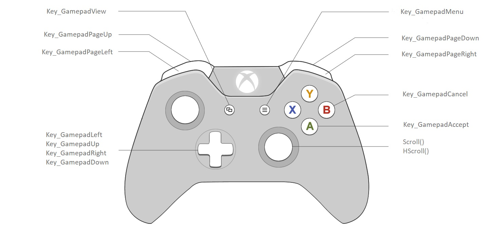

NoesisGUI Integration Tutorial

This tutorial focuses on the steps required to integrate NoesisGUI in your own application and start rendering user interfaces with custom technology. Although we provide an open source framework for using NoesisGUI in all our supported platforms, the Application Framework, this guide will walk you through the process of achieving an integration without the Application Framework.
Note that NoesisGUI has already been integrated with many game engines and technologies. NoesisGUI can be used directly with supported game engines with minimal coding. This guide is primarily targeted at engineers planning to integrate NoesisGUI with a custom technology, or to those looking for a technical overview of NoesisGUI’s capabilities.
Note
Integration and IntegrationGLUT are fully annotated samples included inside the SDK. It is highly recommended following those samples when reading this guide.
Prerequisites
This tutorial assumes the following:
- You are familiar with the XAML format.
- You understand the base architecture.
- You are familiar with Rendering and Resource architectures.
SDK Directories
The SDK is structured in the following root directories:
- /Bin: this is the directory where dynamic libraries, one folder per architecture, can be found. Your executable must be able to reach this path. The easiest way is by copying it here in a post-build step.
- /Include: directory for public headers. You must add this path to the Additional Include Directories of your project
- /Lib: object libraries to link against with are stored in this directory, one folder per architecture. You must add this path to you Additional Libraries Directory and also link with the corresponding library.
- /Build: solutions for building all samples are included in this directory.
- /Src: the source code for each sample and for the Application Framework.
- /Data: location of XAML snippets for testing your integration and using XamlPlayer.
Integration Steps
Initialization
Before being able to render any XAML, Noesis must be initialized by invoking Noesis::GUI::Init(). In case you want to install an error handler, log handler or memory allocator it must be done before this step.
void main()
{
Noesis::SetLogHandler([](const char*, uint32_t, uint32_t level, const char*, const char* msg)
{
// [TRACE] [DEBUG] [INFO] [WARNING] [ERROR]
const char* prefixes[] = { "T", "D", "I", "W", "E" };
printf("[NOESIS/%s] %s\n", prefixes[level], msg);
});
// Noesis initialization. This must be the first step before using any NoesisGUI functionality
Noesis::GUI::Init(NS_LICENSE_NAME, NS_LICENSE_KEY);
// ...
}
Note
The default error handler just redirects to the log handler. So, just setting only the log handler is probably enough. If you want to have control about Noesis allocations you must set a memory allocator. For simplicity's sake we are not doing it here.
More information about NS_LICENSE_NAME and NS_LICENSE_KEY in this guide.
Resource Providers
After initialization, a resource provider must be installed for each kind of asset your application is going to load. For example, loading resources from the current directory is achieved this way:
Noesis::GUI::SetXamlProvider(MakePtr<LocalXamlProvider>("."));
Noesis::GUI::SetFontProvider(MakePtr<LocalFontProvider>("."));
Noesis::GUI::SetTextureProvider(MakePtr<LocalTextureProvider>("."));
Once providers are installed, fallback fonts and default font properties must be set:
const char* fonts[] = { "Fonts/#PT Root UI", "Arial", "Segoe UI Emoji" };
GUI::SetFontFallbacks(fonts, 3);
GUI::SetFontDefaultProperties(15.0f, FontWeight_Normal, FontStretch_Normal, FontStyle_Normal);
If you are going to use our default theme, the Application Framework provides a helper function that will do everything in a single call: installing your custom providers and internal providers needed by theme, setting theme default font and system fallback fonts supporting emojis and asian scripts:
Ptr<LocalXamlProvider> myXamlProvider = MakePtr<LocalXamlProvider>(".");
Ptr<LocalFontProvider> myFontProvider = MakePtr<LocalFontProvider>(".");
Ptr<LocalTextureProvider> myTextureProvider = MakePtr<LocalTextureProvider>(".");
NoesisApp::SetThemeProviders(myXamlProvider, myFontProvider, myTextureProvider);
Note
Each time a resource (Xaml, Texture, Font) is requested, the corresponding provider is invoked to get a Stream to the content. You must install a provider for each needed resource. There are a few implementations available in the app framework (like LocalXamlProvider to load from disk)
Application Resources
Every application must provide a ResourceDictionary containing styles and templates for all controls that appear in the application. You can find more information in this guide. If you installed the theme providers available in the Application Framework then this step is as simple as:
Noesis::GUI::LoadApplicationResources("Theme/NoesisTheme.DarkBlue.xaml");
View creation
A view is needed to render the user interface and interact with it. A view holds a tree of elements. The easiest way to build interface trees is by loading them from XAML files. This can be done using the helper function LoadXaml. Once the XAML is loaded you must create a view with it and specify its dimensions. Remember to sync the size of the view each time your window or surface is resized.
Ptr<FrameworkElement> xaml = Noesis::GUI::LoadXaml<FrameworkElement>("Reflections.xaml");
Ptr<IView> view = Noesis::GUI::CreateView(xaml);
view->SetFlags(Noesis::RenderFlags_PPAA | Noesis::RenderFlags_LCD);
view->SetSize(1024, 768);
Once the view is created, its renderer must be initialized with a render device. You should provide your own implementation although we provide several reference implementations within the Application Framework.
Ptr<RenderDevice> device = NoesisApp::GLFactory::CreateDevice();
view->GetRenderer()->Init(device);
Note
If you are using a separate thread for rendering. This last step must be performed in that thread
Registering classes
In case you are Extending Noesis with new classes, you must register them after Noesis initialization.
Noesis::RegisterComponent<Scoreboard::MainWindow>();
Noesis::RegisterComponent<Scoreboard::App>();
Noesis::RegisterComponent<Scoreboard::ThousandConverter>();
Noesis::RegisterComponent<EnumConverter<Scoreboard::Team>>();
Noesis::RegisterComponent<EnumConverter<Scoreboard::Class>>();
Attaching to events
To have interaction with the user interface you need hooking to events. As described in the Events tutorial, there are many ways to achieve this. An easy way is connecting control events with local delegates. Just find each desired control by name and connect to a delegate.
Slider* slider = view->GetContent()->FindName<Slider>("Luminance");
slider->ValueChanged() += &LuminanceChanged;
Input Management
Once per frame you must gather input events from keyboard, mouse, touch and gamepad and send them to each view. For specific details about how to translate events from each window subsystem to Noesis we provide implementations for each platform in the Application Framework: Win32Display, AppKitDisplay, UIKitDisplay, XDisplay, etc.
Mouse
The following functions are available to indicate when the mouse moves, when is clicked and when the horizontal and vertical wheel are rotated.
void MouseButtonDown(int x, int y, MouseButton button);
void MouseButtonUp(int x, int y, MouseButton button);
void MouseDoubleClick(int x, int y, MouseButton button);
void MouseMove(int x, int y);
void MouseWheel(int x, int y, int wheelRotation);
void MouseHWheel(int x, int y, int wheelRotation);
Keyboard
When a key is pressed you must use KeyDown() and KeyUp(). To send already processed UTF-32 characters, Char is provided.
void KeyDown(Key key);
void KeyUp(Key key);
void Char(uint32_t ch);
Touch
For tracking fingers TouchDown, TouchMove and TouchUp are available. Several fingers can be tracked separately, each one with a different id, to support multi-touch interaction.
void TouchDown(int x, int y, uint64_t id);
void TouchMove(int x, int y, uint64_t id);
void TouchUp(int x, int y, uint64_t id);
Gamepad
In the Key enumeration used to send keyboard events, there are a few virtual codes specifically added to support hardware gamepad buttons:
| Noesis Key | Xbox mapping | Key equivalent |
|---|---|---|
| Key_GamepadLeft | D-pad left | Key_Left |
| Key_GamepadUp | D-pad up | Key_Up |
| Key_GamepadRight | D-pad right | Key_Right |
| Key_GamepadDown | D-pad down | Key_Down |
| Key_GamepadAccept | A button | Key_Space |
| Key_GamepadCancel | B button | Key_Escape |
| Key_GamepadMenu | Menu button | |
| Key_GamepadView | View button | |
| Key_GamepadPageUp | Left trigger | Key_PageUp |
| Key_GamepadPageDown | Right trigger | Key_PageDown |
| Key_GamepadPageLeft | Left bumper | Key_PageLeft |
| Key_GamepadPageRight | Right bumper | Key_PageRight |
| Key_GamepadContext1 | X button | |
| Key_GamepadContext2 | Y button | |
| Key_GamepadContext3 | Left stick | |
| Key_GamepadContext4 | Right stick |
Note
This is an extension to WPF. In case you want to remain compatible with your Blend project, we provide the class GamepadTrigger to execute actions in response to gamepad events.
Besides that, there are also two functions to send scrolling feedback to the view. You normally map this to the right analog stick.
void Scroll(float value);
void HScroll(float value);
The following image is an example about how to map the Xbox controller to Noesis events.
Update
Once per frame the view instance must be ticked to update its internal representation. At this step the current state is locked and stored to be consumed by the render thread described in the next step. From a high-level perspective this can be seen as taking a frame snapshot of the current UI state.
view->Update(glutGet(GLUT_ELAPSED_TIME) / 1000.0);
Note
A common error here is passing a delta time instead of a global one
Render
After updating, the view is ready to be rendered. Before sending commands to the GPU, first thing you must do is updating the renderer to collect commands from the last update performed. You can find more information about this step in the Rendering Architecture guide. UpdateRenderTree returns whether there are changes from the last render. This boolean can be used to skip rendering in case you have a valid copy of the last frame.
bool updated = view->GetRenderer()->UpdateRenderTree();
After updating the renderer, offscreen textures must be generated. This step populates all the internal textures that are needed for the current frame. From a performance point of view, it is critical to apply this step before binding the main render target.
view->GetRenderer()->RenderOffscreen();
After that, the main render target and viewport must be bound. Note that the above step for rendering offscreen textures modifies the GPU state, so you need to restore it. This is also the right moment to render you 3D scene in case you using a HUD (head-up display) interface.
Note
Because Render() function modifies the GPU state, you must restore it properly to a sane state for your application. For performance reasons it is not done automatically. The most straightforward solution is to save device state before the call to RenderOffscreen() and restore it afterwards. Greater performance can be achieved if your application implements a way to invalidate its required states. This is faster because you avoid getting the current state from the driver.
glBindFramebuffer(GL_FRAMEBUFFER, 0);
glViewport(0, 0, glutGet(GLUT_WINDOW_WIDTH), glutGet(GLUT_WINDOW_HEIGHT));
glClearColor(0.0f, 0.0f, 0.25f, 0.0f);
glClearStencil(0);
glClear(GL_COLOR_BUFFER_BIT | GL_STENCIL_BUFFER_BIT);
And finally, the interface is rendered into the current render target.
view->GetRenderer()->Render();
Note
Masking, used to hide part of UI elements, is implemented in NoesisGUI using the StencilBuffer. Make sure that you are binding a a stencil buffer with at least 8 bits to properly support masks. And also make sure to clear it to zero before doing the on-screen UI rendering.
Finalization
Before exiting your application each view renderer must be shutdown. This must be done from the render thread if you are using any. Besides, each Ptr you own must be Reset(). After cleaning all objects, Noesis must be properly closed by invoking the Shutdown() function. This releases all internal allocated resources.
view->GetRenderer()->Shutdown();
view.Reset();
Noesis::GUI::Shutdown();